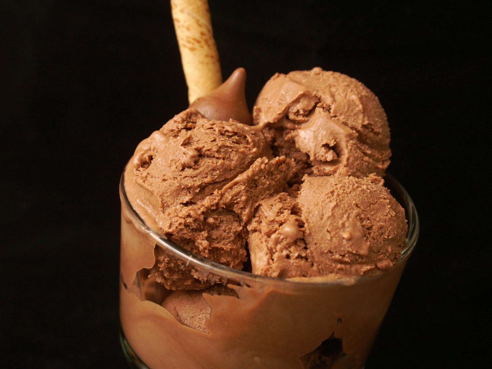
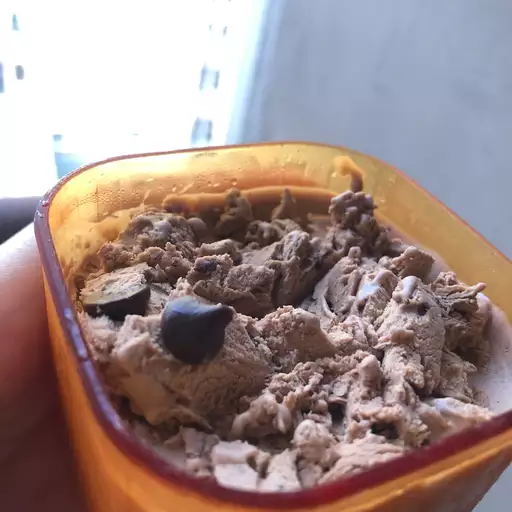

Very Chocolate Ice Cream

Description
This chocolate ice cream is a rich, custard-style ice cream flavored with semisweet chocolate and cocoa powder.
Prep time: 10 mins | Cook Time: 10 mins | additional Time: 4 hrs| Total Time: 4 hrs 20 mins
Servings: 8 Yeild: 1 quart
This chocolate ice cream recipe is rich, sweet, creamy, and easy to make with just eight ingredients you likely already have on hand.
Ingredients
These are the simple ingredients you'll need to make this homemade chocolate ice cream recipe:
-
Milk:This easy ice cream recipe starts with a cup of milk.
-
Sugar: Sweeten things up with ¾ cup white sugar.
-
Cocoa powder: Unsweetened cocoa powder gives this ice cream a chocolatey base.
-
Salt: A pinch of salt enhances the overall flavor, but it won't make the ice cream taste salty.
-
Egg yolks: This custard-like chocolate ice cream requires three lightly beaten egg yolks.
-
Chocolate: Chopped semisweet chocolate takes the decadence up a notch.
-
Heavy cream: You'll need two cups of heavy cream.
-
Vanilla: A teaspoon of vanilla extract adds complexity and enhances the flavor.
- 1 cup milk
- ¾ cup sugar
- 2 tablespoons unsweetened cocoa powder
- ¼ teaspoon salt
- 3 egg yolk, lightly beaten
- 2 ounces semisweet chocolate, chopped
- 2 cups heavy cream
- 1 teaspoon vanilla extract
You'll find the full, step-by-step recipe below-but here's a brief overview of what you can expect when you make this chocolate ice cream:
- Bring the milk, sugar, cocoa, and salt to a simmer in a saucepan.
- Whisk ½ of the milk mixture into the yolks, return to the pan, and stir until thickened.
- Remove from heat and stir in chopped chocolate.
- Refrigerate in a chilled bowl until cold.
- Add the remaining ingredients, then freeze in an ice cream maker.
- 1 cup milk
- 2 tablespoons vegetable oil
- 2 ripe bananas, mashed
Steps
- Combine milk, sugar, cocoa powder, and salt in a saucepan over medium heat. Bring to a simmer, stirring constantly.
- Place egg yolks into a small bowl. Gradually whisk in about 1/2 cup of hot milk mixture, then return to the saucepan. Heat and stir until thickened, but do not boil.
- Remove from the heat and stir in chopped chocolate until melted.
- Pour into a chilled bowl and refrigerate, stirring occasionally, until cold, about 2 hours.
- Stir in cream and vanilla. Pour into an ice cream maker and freeze according to manufacturer's directions.
